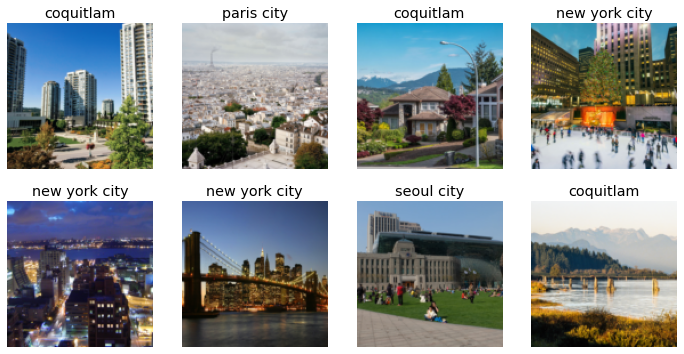
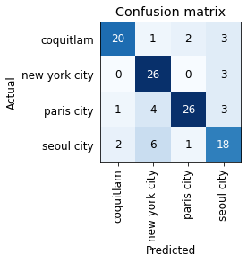
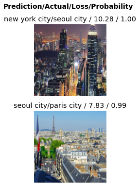
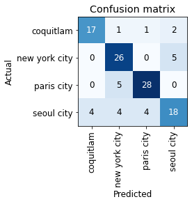
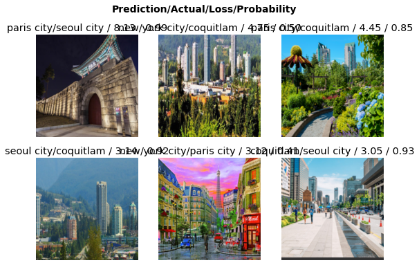

#hide
from fastbook import *
from fastai.vision.widgets import *Coquitlam Paris Seoul and New York.
- toc: true
- branch: master
- badges: true
- comments: true
- author: Jaekang Lee
- categories: [fastpages, jupyter]
Let’s make app that recognizes Coquitlam!
#hide
import os
key = os.environ.get('AZURE_SEARCH_KEY', '39f25aae8d744a528b964a94a4af8b58')Let’s get the images of each city
city_types = 'seoul city','coquitlam','paris city', 'new york city'
path = Path('cities')if not path.exists():
path.mkdir()
for o in city_types:
dest = (path/o)
dest.mkdir(exist_ok=True)
results = search_images_bing(key, f'{o}')
download_images(dest, urls=results.attrgot('content_url'))#hide_output
fns = get_image_files(path)
fns(#596) [Path('cities/coquitlam/00000000.jpg'),Path('cities/coquitlam/00000001.jpg'),Path('cities/coquitlam/00000002.png'),Path('cities/coquitlam/00000003.jpg'),Path('cities/coquitlam/00000004.jpg'),Path('cities/coquitlam/00000005.jpg'),Path('cities/coquitlam/00000006.jpg'),Path('cities/coquitlam/00000007.jpg'),Path('cities/coquitlam/00000008.jpg'),Path('cities/coquitlam/00000009.jpg')...]#hide_output
failed = verify_images(fns)
failed(#16) [Path('cities/coquitlam/00000067.jpg'),Path('cities/coquitlam/00000077.JPG'),Path('cities/coquitlam/00000079.jpg'),Path('cities/coquitlam/00000135.jpg'),Path('cities/new york city/00000010.jpg'),Path('cities/new york city/00000014.jpg'),Path('cities/new york city/00000020.jpg'),Path('cities/new york city/00000026.jpg'),Path('cities/new york city/00000029.jpg'),Path('cities/new york city/00000037.jpg')...]failed.map(Path.unlink)(#16) [None,None,None,None,None,None,None,None,None,None...]Let’s load the data
class DataLoaders(GetAttr):
def __init__(self, *loaders): self.loaders = loaders
def __getitem__(self, i): return self.loaders[i]
train,valid = add_props(lambda i, self: self[i])cities = DataBlock(
blocks=(ImageBlock, CategoryBlock),
get_items=get_image_files,
splitter=RandomSplitter(valid_pct=0.2, seed=42),
get_y=parent_label,
item_tfms=Resize(128))dls = cities.dataloaders(path)
dls.valid.show_batch(max_n=8, nrows = 2)
Let’s scale and augment the datas
cities = cities.new(item_tfms=RandomResizedCrop(224, min_scale=0.5),
batch_tfms=aug_transforms())
dls = cities.dataloaders(path, num_workers=0) # <- num_workers=0 to prevent window errorLet’s build and run a CNN model
learn = cnn_learner(dls, resnet18, metrics=error_rate)
learn.fine_tune(4)| epoch | train_loss | valid_loss | error_rate | time |
|---|---|---|---|---|
| 0 | 2.187395 | 1.315027 | 0.482759 | 00:42 |
| epoch | train_loss | valid_loss | error_rate | time |
|---|---|---|---|---|
| 0 | 1.307873 | 0.871226 | 0.336207 | 00:41 |
| 1 | 1.064780 | 0.831430 | 0.241379 | 00:41 |
| 2 | 0.876646 | 0.767134 | 0.215517 | 00:41 |
| 3 | 0.784991 | 0.738216 | 0.224138 | 00:49 |
Let’s look at the confusion matrix
interp = ClassificationInterpretation.from_learner(learn)
interp.plot_confusion_matrix()
We got an accuracy of 26/90 = 71% (rounded)
interp.plot_top_losses(2,nrows=2)
Let’s try to clean up the dataset
cleaner = ImageClassifierCleaner(learn)
cleaner# Deleted Photos of maps, inside of home and image of just texts
for idx in cleaner.delete(): cleaner.fns[idx].unlink() # delete dls = cities.dataloaders(path, num_workers=0)
learn = cnn_learner(dls, resnet18, metrics=error_rate)
learn.fine_tune(5)| epoch | train_loss | valid_loss | error_rate | time |
|---|---|---|---|---|
| 0 | 1.933403 | 1.322945 | 0.460870 | 00:38 |
| epoch | train_loss | valid_loss | error_rate | time |
|---|---|---|---|---|
| 0 | 1.258363 | 0.800413 | 0.347826 | 00:37 |
| 1 | 1.014135 | 0.660854 | 0.243478 | 00:38 |
| 2 | 0.851025 | 0.609896 | 0.243478 | 00:38 |
| 3 | 0.725140 | 0.591347 | 0.217391 | 00:37 |
| 4 | 0.623130 | 0.582418 | 0.226087 | 00:37 |
Valid_loss doesn’t decrease so we stop
interp = ClassificationInterpretation.from_learner(learn)
interp.plot_confusion_matrix()
interp.plot_top_losses(6,nrows=2)
It looks like it has a hard time highlighting seoul city’s characteristics as most error comes from seoul images. Suspected factors include seoul having new york like buildings, mountains like coquitlam and brick structures like paris city.
Ignore Below (Deployment IPR)
learn.export()#hide_output
path = Path()
path.ls(file_exts='.pkl')(#1) [Path('export.pkl')]learn_inf = load_learner(path/'export.pkl')learn_inf.dls.vocab['coquitlam', 'new york city', 'paris city', 'seoul city']btn_upload = widgets.FileUpload()
btn_uploadimg = PILImage.create(btn_upload.data[-1])#hide_output
out_pl = widgets.Output()
out_pl.clear_output()
with out_pl: display(img.to_thumb(128,128))
out_plpred,pred_idx,probs = learn_inf.predict(img)
#hide_output
lbl_pred = widgets.Label()
lbl_pred.value = f'Prediction: {pred}; Probability: {probs[pred_idx]:.04f}'
lbl_pred